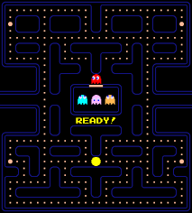
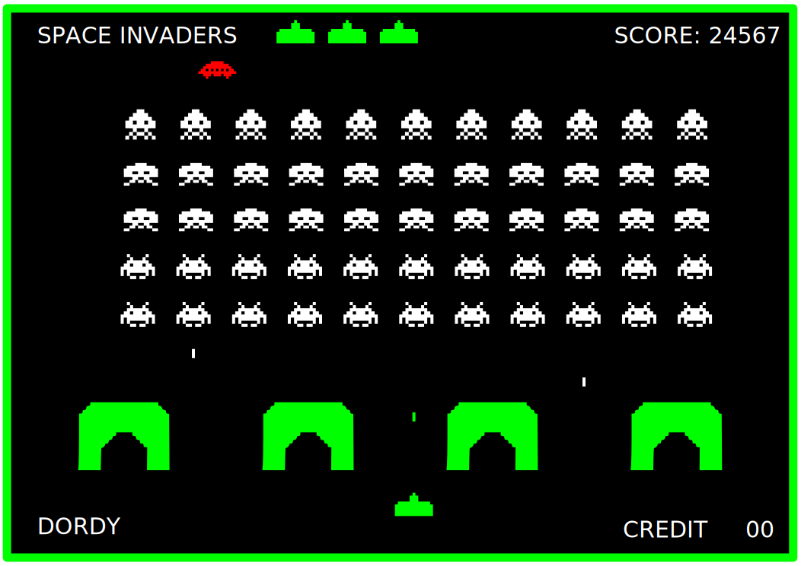
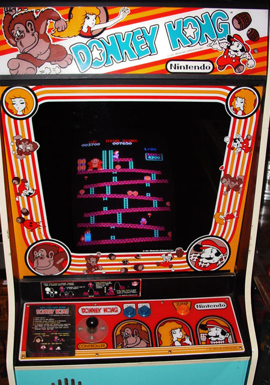
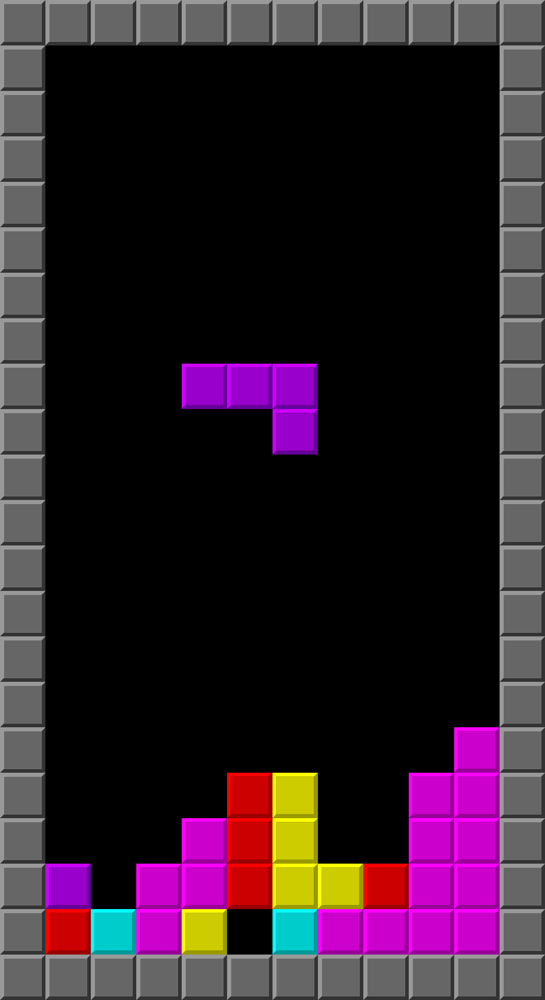
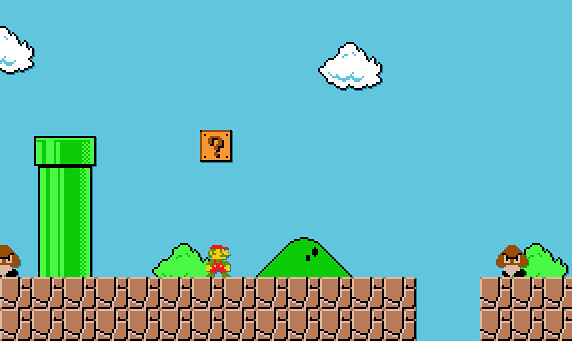

Brinquedos e Jogos
Bem-vindo ao nosso mundo de diversão sem fim! Descubra brinquedos emocionantes, jogos cativantes e entretenimento interativo que transcende gerações. Explore curiosidades, análises e as últimas novidades, mergulhando na diversão de brincar e competir. Junte-se a nós nesta jornada pela alegria dos brinquedos e jogos.
Anos 80
Brinquedos
Cubo Mágico (Rubik's Cube)

O Cubo Mágico, também conhecido como Rubik's Cube, é um quebra-cabeça tridimensional que se tornou um fenômeno cultural nos anos 80. Inventado pelo húngaro Ernő Rubik em 1974, o Cubo Mágico foi lançado comercialmente em 1980 e rapidamente conquistou o mundo. Com suas seis faces coloridas e inúmeras combinações possíveis, ele desafiou a mente de crianças e adultos, tornando-se um ícone da década e um dos brinquedos mais populares de todos os tempos. Sua complexidade e apelo atemporal continuam a cativar entusiastas de quebra-cabeças até hoje.
Curiosidade!
Uma curiosidade fascinante sobre o Cubo Mágico é que existem mais de 43 quintilhões de combinações possíveis em um cubo 3x3x3 padrão. Isso significa que, teoricamente, você poderia misturar as cores de um Cubo Mágico de tal forma que levaria uma vida inteira para resolvê-lo, se tentasse uma combinação diferente a cada segundo. Essa imensa complexidade é um dos motivos pelos quais o Cubo Mágico continua a intrigar e desafiar as mentes das pessoas em todo o mundo.
Pega Varetas

O "Pega Varetas" era um jogo de destreza e habilidade que proporcionava horas de diversão para crianças e até mesmo adultos. O jogo consistia em um conjunto de varetas coloridas espalhadas sobre uma mesa. O objetivo era pegar uma vareta sem mover as outras. Cada vareta tinha uma pontuação e ganhava quem acumulasse mais pontos. Este simples jogo era uma forma de entretenimento nostálgica e envolvente, que muitos ainda lembram com carinho dos anos 80.
Curiosidade!
O "Pega Varetas" foi criado originalmente na Hungria em 1930 e se chamava "Mikado." Durante a Segunda Guerra Mundial, soldados americanos descobriram o jogo na Europa e o trouxeram para os Estados Unidos. O nome "Pega Varetas" foi adotado para torná-lo mais acessível para o público americano. Desde então, o jogo se espalhou pelo mundo e se tornou um dos passatempos favoritos das crianças dos anos 80 e 90.
Pula-Pirata

O "Pula-Pirata" foi um brinquedo popular nas décadas de 80 e 90. Era um jogo de suspense e habilidade que envolvia retirar espadas do barril de um pequeno pirata sem fazê-lo pular para fora do barril. Cada jogador alternava, inserindo suas espadas no barril até que, eventualmente, o pirata saltava para fora, surpreendendo a todos. Era um jogo emocionante que testava a coragem dos participantes enquanto tentavam evitar que o pirata saltasse.
Curiosidade!
O "Pula-Pirata" foi inspirado em um jogo de origem alemã chamado "Pop-Up Kasper," que envolvia fazer um fantoche de palhaço pular de uma caixa. A versão de pirata foi adaptada e se tornou um sucesso internacional.
Carrinho de Controle Remoto (RC)

Os carrinhos de controle remoto eram uma febre nos anos 80. Eles vinham em várias formas e tamanhos, desde carros de corrida rápidos até caminhões monstros. O que tornou esses brinquedos tão especiais foi a capacidade de controlá-los à distância usando um controle remoto. Os entusiastas podiam competir em corridas emocionantes e realizar acrobacias incríveis com seus carrinhos de controle remoto.
Curiosidade!
Os carrinhos de controle remoto evoluíram significativamente desde os anos 80. Hoje em dia, eles são equipados com tecnologia avançada, como câmeras e conectividade com smartphones, permitindo uma experiência de controle ainda mais emocionante.
Pense Bem

O "Pense Bem" foi um brinquedo icônico dos anos 80 que encantou crianças e proporcionou uma experiência educacional única. Este dispositivo eletrônico introduziu as crianças ao mundo da resolução de quebra-cabeças, perguntas e cálculos matemáticos de uma forma divertida e envolvente. Com seu design inovador e interatividade, o "Pense Bem" tornou-se um símbolo da era da tecnologia educacional para crianças na década de 1980. Vamos explorar mais sobre essa peça nostálgica que fez parte da infância de muitos.
Curiosidade!
Uma curiosidade fascinante sobre o "Pense Bem" é que, apesar de ser considerado uma versão mais simples de um computador, ele foi projetado com a consultoria do renomado psicólogo Jean Piaget, que se destacou por seus estudos sobre o desenvolvimento cognitivo infantil. A influência de Piaget na criação do "Pense Bem" ajudou a moldar seu conteúdo de acordo com os estágios de desenvolvimento intelectual das crianças, tornando-o uma ferramenta educacional eficaz e adaptada às necessidades de aprendizado da época. Essa colaboração entre a tecnologia e a psicologia contribuiu para o sucesso duradouro do brinquedo.
Videogames
Pac-Man (1980)
O "Pac-Man" é um dos jogos de arcade mais icônicos dos anos 80, que conquistou o coração de jogadores de todas as idades. Desenvolvido pela Namco, este jogo apresenta um personagem amarelo redondo conhecido como Pac-Man, cuja missão é percorrer um labirinto comendo pontos enquanto evita ser capturado por fantasmas coloridos.
No "Pac-Man," os jogadores controlam Pac-Man enquanto ele se move pelo labirinto, comendo pontos para acumular pontos. No entanto, o desafio vem dos quatro fantasmas (Blinky, Pinky, Inky e Clyde) que perseguem Pac-Man. Cada um desses fantasmas tem seu próprio comportamento único, o que torna o jogo estratégico e emocionante. O objetivo é comer todos os pontos do labirinto enquanto evita ser pego pelos fantasmas. Além dos pontos normais, os jogadores podem comer as "pílulas de poder," que temporariamente permitem que Pac-Man reverta os papéis e caça os fantasmas.
Curiosidade!
Uma curiosidade fascinante sobre o "Pac-Man" é que o jogo foi originalmente chamado de "Puck-Man" no Japão. No entanto, o nome foi alterado para "Pac-Man" quando foi lançado nos Estados Unidos para evitar vandalismo, já que a letra "P" na forma original do logo poderia ser facilmente alterada para "F." Esse jogo rapidamente se tornou um sucesso mundial e ajudou a estabelecer a indústria de videogames como a conhecemos hoje.
Space Invaders (1978)
"Space Invaders" é um dos jogos de arcade mais influentes e emblemáticos da história dos videogames, embora tenha sido lançado em 1978, seus efeitos e popularidade se estenderam por toda a década de 1980. Este jogo espacial de tiro desafiava os jogadores a defender a Terra de uma invasão alienígena iminente.
No "Space Invaders," os jogadores controlavam uma pequena nave espacial que podia se mover horizontalmente na parte inferior da tela. A missão era destruir uma formação de alienígenas que descia gradualmente em direção à nave. Os alienígenas se moviam de um lado para o outro e avançavam em direção à nave do jogador. Se os alienígenas tocassem na nave, era o fim do jogo. A jogabilidade simples, mas desafiadora, cativou os jogadores e ajudou a definir o gênero dos jogos de tiro.
Curiosidade!
Uma curiosidade interessante sobre o "Space Invaders" é que sua popularidade no Japão foi tão grande que levou a uma escassez de moedas de 100 ienes, pois muitas pessoas as trocavam por moedas de 100 ienes para poder jogar o jogo nos arcades. Esse fenômeno até mesmo levou o Banco Central do Japão a aumentar a produção de moedas para atender à demanda causada pelo jogo.
"Space Invaders" teve um impacto duradouro na indústria de jogos e é frequentemente lembrado como um dos jogos mais emblemáticos da década de 1980.
Donkey Kong (1981)
"Donkey Kong" é um jogo clássico da década de 1980 que marcou o início da carreira de dois personagens icônicos da Nintendo: Mario e Donkey Kong. Este jogo de plataforma desafiador foi uma das primeiras aparições de Mario, que na época era conhecido como "Jumpman," e é lembrado por sua jogabilidade viciante e desafios emocionantes.
No "Donkey Kong," os jogadores controlavam Jumpman (que mais tarde se tornaria Mario) em uma missão para resgatar uma donzela em perigo, chamada Pauline, das garras do grande gorila Donkey Kong. O jogo apresentava quatro níveis de plataforma com obstáculos e inimigos desafiadores. Os jogadores tinham que pular sobre barris rolantes, escalar escadas e evitar o alcance de Donkey Kong para alcançar Pauline no topo da tela.
Curiosidade!
Uma curiosidade interessante sobre o "Donkey Kong" é que este jogo marcou o início da rivalidade entre Mario e Donkey Kong, que continuaria em futuros jogos. Além disso, "Donkey Kong" também foi o jogo de estreia de Shigeru Miyamoto, o lendário designer de jogos da Nintendo, que mais tarde criaria franquias como "Super Mario" e "The Legend of Zelda."
"Donkey Kong" é considerado um dos jogos mais influentes da história dos videogames e estabeleceu as bases para o sucesso contínuo da Nintendo na indústria de jogos.
Tetris (1984)
"Tetris" é um dos jogos mais icônicos e viciantes já criados. Desenvolvido por Alexey Pajitnov na União Soviética em 1984, o jogo rapidamente se espalhou pelo mundo e se tornou um fenômeno da década de 1980. Sua jogabilidade simples e desafiadora o tornou um favorito de jogadores de todas as idades.
Em "Tetris," os jogadores são desafiados a encaixar blocos de diferentes formas (chamados tetriminos) em uma grade, com o objetivo de criar linhas completas. Quando uma linha é preenchida, ela desaparece, e o jogador ganha pontos. O jogo continua, ficando cada vez mais rápido à medida que o jogador avança. O objetivo é sobreviver o máximo possível, encaixando os tetriminos de forma estratégica para evitar que a pilha de blocos alcance o topo da tela.
Curiosidade!
Uma curiosidade fascinante sobre "Tetris" é que o jogo foi criado por Alexey Pajitnov enquanto ele trabalhava no Centro de Computação da Academia de Ciências da União Soviética. O nome "Tetris" é uma combinação das palavras "tetromino" (o nome técnico dos blocos) e "tênis," que era o esporte favorito de Pajitnov. O jogo originalmente não tinha música, mas a melodia cativante que o acompanha tornou-se igualmente famosa.
"Tetris" é um dos jogos mais vendidos de todos os tempos e continua sendo jogado e amado por pessoas de todas as idades até os dias de hoje. Sua simplicidade e desafio atemporais são os principais motivos de seu sucesso duradouro.
Super Mario Bros. (1985)
"Super Mario Bros." é um dos jogos mais icônicos e influentes da história dos videogames. Lançado pela Nintendo em 1985, este jogo de plataforma estrelado por Mario, o encanador, e seu irmão Luigi, tornou-se um marco da década de 1980 e é amplamente considerado um dos maiores jogos de todos os tempos.
No "Super Mario Bros.," os jogadores assumem o papel de Mario ou Luigi enquanto embarcam em uma missão para resgatar a Princesa Peach do vilão Bowser. O jogo apresenta uma série de mundos coloridos e repletos de obstáculos, inimigos e segredos. Os jogadores podem pular sobre inimigos, coletar moedas e power-ups, como o icônico cogumelo Super, que faz com que Mario ou Luigi cresçam. A jogabilidade fluida, os níveis criativos e a trilha sonora cativante contribuíram para o sucesso fenomenal do jogo.
Curiosidade!
Uma curiosidade fascinante sobre "Super Mario Bros." é que seu criador, Shigeru Miyamoto, teve a ideia de um jogo de plataforma após observar os canos de esgoto em sua cidade natal. Os canos inspiraram a mecânica de entrar em tubos no jogo. Além disso, a trilha sonora do jogo, composta por Koji Kondo, se tornou uma das músicas mais reconhecíveis da indústria de videogames.
"Super Mario Bros." não apenas estabeleceu a Nintendo como uma potência na indústria de jogos, mas também introduziu o mundo a personagens e conceitos que se tornariam lendários. O jogo inspirou inúmeras sequências e continua a ser adorado por gerações de jogadores em todo o mundo.